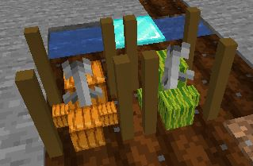

- Fixed plant stats passing the max value (10)
- Fix loading issue with plant stats
- Fix growth when the plantStat "growthSpeed" was MAX. Now the growth step is divided by a random value so the growth stat isnt OP.
- Added recipe for crop cuttings
- Added gain property on drops. Now the qtd of the drop in question is evaluated depending on the plantStat "gain"
- Started working on custom final states.
- Custom plant models for final states like pumpkins and melons
